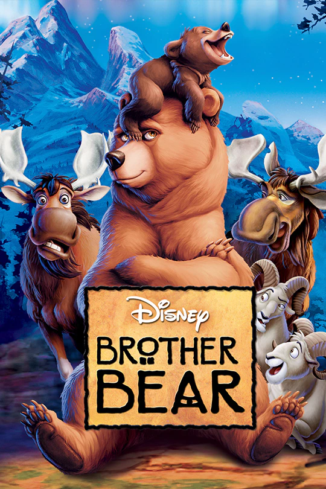
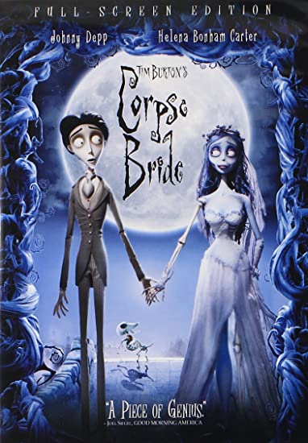

Previously Computer Science, now Information Systems undergraduate at ICMC - USP.
22 years old from Barueri - SP
|  |
Brother BearThis Disney animation movie tells the story of Kenai, an indigenous young man who is transformed in a bear by the spirit of his dead brother Sitka while searching for revenge. I the journey to become human again he meets Koda, a bear child. |
|  |
Corpse BrideWhile training for his arranged wedding, Victor accidentally marries Emily, a dead girl who dreamt about getting married before getting killed. |
ChappieIn South Africa, a researcher uses a danified police robot to test his conscience model research. But things go wrong when he is kidnapped and the criminals find out about the conscious robot. |
Music
Science
Language Learning